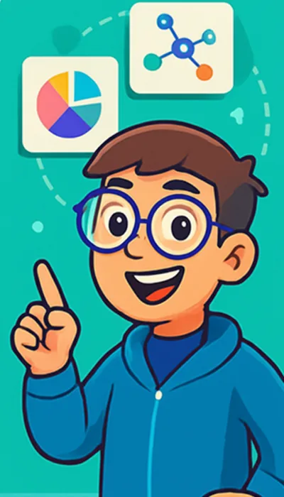
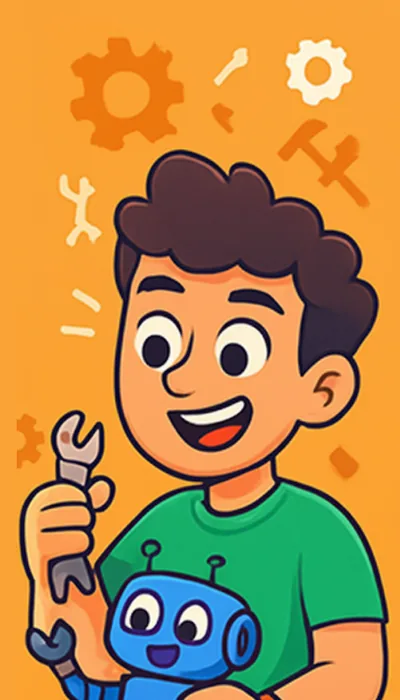
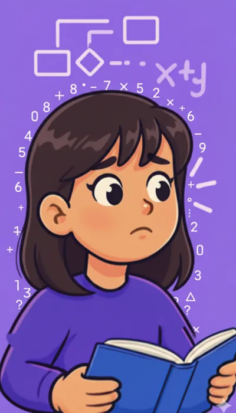

Contexto
Lumi empezó como un proyecto académico de cuatro meses y acabó siendo donde aprendí a decir que no. El problema no lo inventamos: lo trajeron dos compañeras del equipo que trabajan en innovación educativa en colegios de Perú. Las plataformas de e-learning entregan el mismo contenido a todo el mundo y después se extrañan del abandono.
La idea que salió del papel era enorme: recompensas en blockchain con token propio, perfiles cognitivos, IA generando rutas en tiempo real, analítica que anticipa abandonos. Todo defendible en una presentación. Nada de ello construible por cuatro personas en cuatro meses.
Mi trabajo no fue diseñar la plataforma entera. Fue decidir qué versión de ella se podía construir, sostener ese recorte cuando el equipo quería meter más, y dejarlo escrito para que la decisión no se renegociara cada semana.
El Desafío
Un concepto de hackathon no falla por falta de ideas, falla por exceso. La pregunta no era cómo hacer que Lumi se adaptara a cada persona —eso ya estaba respondido sobre el papel—, sino cuál era la versión más pequeña que todavía demostraba que la idea se sostiene, y cómo íbamos a saber si lo había demostrado.
Mi Rol en el Proyecto
Service Designer y Project Manager en un equipo de cuatro. En la práctica el rol era el de dueña del producto: no había cliente que fijara el alcance ni nadie por encima que aprobara las decisiones, así que qué se construía y en qué orden lo decidía yo y lo defendía ante el equipo.
Mis responsabilidades incluyeron:
- Decidir el alcance de la primera versión y sostener los recortes cuando el equipo quería ampliarlos.
- Ordenar la construcción por prioridad numerada, y escribir los criterios de aceptación de cada pieza antes de programarla.
- Definir los cuatro segmentos de usuario y el modelo de recompensas, incluida la decisión de simular el canje en lugar de construirlo.
- Conducir la investigación con el equipo y traducir los hallazgos en requisitos: qué entra, qué se descarta y por qué.
- Decidir en qué etapas aportaban las herramientas de IA y en cuáles no (ChatGPT, Gemini, Claude, Storm, Manus, Lovable, Zapier), y construir con ellas la identidad visual y los cinco perfiles.
- Llevar a código el home, el login y el dashboard, que es donde se comprueba si las decisiones de producto aguantan.
Decisiones de producto
Lumi empezó como concepto de concurso y acabó siendo código que funciona. Entre una cosa y otra hay una lista de decisiones que tomé yo, sin cliente que las aprobara y sin equipo a quien echarle la culpa. Estas son.
1. Lo primero fue quitar, no añadir
El concepto original tenía blockchain con tokens canjeables, perfilado de personalidad cruzado con situación vital, IA predictiva y analítica de comportamiento. Todo eso quedó fuera de la primera versión, y lo escribí así de explícito en la especificación: «esta versión NO usará blockchain». No porque fuera mala idea, sino porque ninguna de esas piezas se podía construir ni validar en el tiempo que tenía, y un MVP que depende de tecnología que no dominas no es un MVP, es una promesa. Lo que quedó: tres páginas, cinco perfiles de aprendizaje y un sistema de recompensas sin cadena de bloques detrás.
2. Un orden de entrega, no una lista de deseos
La especificación lleva una sección de prioridades donde el alcance está numerado por orden de construcción: primero el registro con sesión persistente y el salto al panel, después el panel cargando datos reales del usuario con su progreso y sus rutas, después la landing con su llamada a la acción, después responsive y accesibilidad básica, y en último lugar las microinteracciones. Ese orden no es estético: es el que permite que en cualquier momento haya algo que enseñar funcionando de punta a punta.
3. Criterios de aceptación escritos antes de programar
Antes de escribir código dejé por escrito cómo sabría que estaba terminado: todas las páginas respondiendo en los cinco puntos de ruptura declarados, el formulario validando y guardando el usuario, el panel mostrando datos reales y no de ejemplo, todos los elementos interactivos alcanzables por teclado y con contraste suficiente, y la documentación de variables incluida. Tener eso escrito es lo que evita la discusión de «¿ya está?» consigo misma a las dos de la mañana.
4. Cuatro segmentos, y uno que no usa el producto
El público se definió por segmentos con su necesidad y su motivación, no por edad: adolescentes que quieren que estudiar no sea un castigo, jóvenes que buscan habilidades que la escuela no da, adultos jóvenes que aprenden sin institución detrás, y padres o tutores. Este último no usa la plataforma para aprender: la usa para confiar. Modelarlo aparte es lo que llevó al panel familiar, una funcionalidad que ningún estudiante habría pedido y que decide si la plataforma entra en una casa.
5. Principios que cierran puertas
Escribí cinco principios de diseño, y dos de ellos son restricciones de verdad porque impiden cosas que el producto podría hacer: «la IA no juzga desempeño» descarta la analítica predictiva sobre estudiantes, y «personalización sin etiquetas» descarta clasificar a nadie por su perfil aunque el sistema lo sepa. Un principio que no te prohíbe nada es decoración; estos dos me cerraron opciones que técnicamente estaban a mano.
6. Medir el producto construido, no el imaginado
Ya con la versión funcionando, la revisé como revisaría la de otro. Encontré un fallo de mayúsculas en una ruta que la habría roto al desplegarla, datos que no sobrevivían de una página a otra, y una carga lenta que resultó ser once megas y medio de imágenes sin optimizar mostradas a un tercio de su tamaño. Convertidas y redimensionadas quedaron en menos de un mega, un noventa y tres por ciento menos, sin pérdida visible. Detectar eso en tu propio trabajo es más difícil que detectarlo en el ajeno.
Alcance: qué entró y qué se cortó
El concepto original traía recompensas en blockchain con un token propio, analítica predictiva para anticipar abandonos y un backend generando rutas en tiempo real. Nada de eso entró en la primera versión, y el recorte quedó escrito en el documento de producto antes de empezar a construir, con esta frase literal: «esta versión NO usará blockchain».
Escribir lo que queda fuera, y no solo lo que queda dentro, es lo que evita la discusión de la semana seis. Cada recorte llevaba su motivo al lado:
- Blockchain y el token: la promesa de valor no dependía de la cadena, dependía del canje. Y el canje se puede simular sin ella.
- Analítica predictiva de abandono: sin usuarios no hay datos de uso, y sin datos de uso el modelo no tiene nada que aprender. Es una funcionalidad que solo puede existir después.
- Backend propio: sin usuarios reales, un backend es coste de mantenimiento sin contrapartida. La persistencia local basta para demostrar que el bucle funciona.
- IA generando rutas en tiempo real: la personalización se podía demostrar con reglas y cinco perfiles. Traer un modelo encarece la construcción sin cambiar lo que hay que aprender de esta versión.
Lo que sí entró se priorizó por número, no por gusto, y cada elemento llevaba su criterio de aceptación escrito antes de construirlo, para que «terminado» no dependiera de quién lo estuviera mirando.
Enfoque y Proceso
Cuatro meses divididos en cuatro fases, cada una con una condición de salida: no se pasaba a la siguiente sin cerrar lo que la anterior tenía que producir. Es lo que hace que un proyecto con plazo fijo llegue a algo en vez de quedarse explorando hasta que se acaba el tiempo.
1. Empatizar e Investigar
Trabajamos directamente con dos expertas en innovación educativa de colegios en Perú para identificar problemas reales:
- Deserción y desmotivación estudiantil
- Falta de personalización en plataformas LMS
- Necesidad de reconocimiento tangible del esfuerzo
- Brecha entre aprender y sentirse acompañado
Herramientas usadas: ChatGPT (análisis de insights), Excalidraw (mapeo colaborativo), Miro (brainstorming visual)
2. Definir e Idear
Definimos el problema central y generamos múltiples conceptos de solución:
- Sistema de personalización basado en 5 estilos de aprendizaje
- Gamificación con propósito: LumiCoins canjeables por valor real
- Visualización del progreso personal y celebración de logros
- Integración de IA para adaptación en tiempo real
Herramientas usadas: Gemini (generación de ideas), Claude (refinamiento conceptual), Storm (investigación de mercado)
3. Prototipar y Diseñar
Creamos la propuesta completa de Lumi, incluyendo:
- Identidad de marca (logo, paleta de colores, tono de voz)
- Los 5 estilos de aprendizaje: Visionauta, Audioexplorador, Manos a la Obra, LogiMaster, Colab Hero
- Sistema de recompensas LumiCoins con valor tangible
- Arquitectura de información y flujos de usuario
- Propuesta de valor y modelo de negocio
Herramientas usadas: Manus (documentación), Lovable (prototipado), Excalidraw (diagramas)
4. Desarrollar e Implementar
Actualmente estoy llevando Lumi a código, desarrollando:
- Homepage con identidad visual completa y los 5 estilos
- Sistema de login y onboarding personalizado
- Dashboard de estudiantes con progreso y LumiCoins
- Integración con Zapier para automatizaciones
Tecnologías: HTML, CSS, JavaScript, React (planned)
Los 5 Estilos de Aprendizaje
Cinco perfiles, no tres ni doce. Con tres, la personalización no se nota y el usuario no entiende para qué respondió el cuestionario. Con doce, el catálogo de contenido hay que multiplicarlo por doce y ningún equipo pequeño lo sostiene. Cinco fue el número en el que la diferencia era perceptible y la producción seguía siendo viable.
El perfil cambia la ruta, no el diagnóstico de la persona. Uno de los principios que escribimos en el documento de producto era «personalización sin etiquetas»: el sistema adapta lo que ofrece, pero no le dice a nadie lo que es. Es una restricción de diseño con consecuencias en el producto, y por eso está escrita.

Visionauta
VisualVisionauta
Aprende viendo: Infografías, diagramas, videos visuales, mapas mentales y contenido gráfico que transforma ideas abstractas en imágenes claras.
- Infografías interactivas
- Mapas mentales
- Videos animados
- Códigos de colores
Audioexplorador
AuditivoAudioexplorador
Aprende escuchando: Podcasts, explicaciones narradas, debates, audiolibros y discusiones que convierten el conocimiento en conversación.
- Podcasts educativos
- Explicaciones narradas
- Debates y discusiones
- Audiolibros

Manos a la Obra
KinestésicoManos a la Obra
Aprende haciendo: Experimentos prácticos, proyectos reales, simulaciones interactivas y talleres donde la teoría cobra vida.
- Experimentos prácticos
- Proyectos reales
- Simulaciones
- Talleres interactivos

LogiMaster
LógicoLogiMaster
Aprende razonando: Problemas lógicos, análisis estructurado, pensamiento crítico y desafíos que conectan causa y efecto.
- Problemas lógicos
- Análisis estructurado
- Pensamiento crítico
- Causa y efecto
Colab Hero
ColaborativoColab Hero
Aprende colaborando: Trabajo en equipo, discusiones grupales, proyectos sociales y construcción colectiva del conocimiento.
- Trabajo en equipo
- Discusiones grupales
- Proyectos sociales
- Construcción colectiva
Sistema de LumiCoins
Cómo funciona el bucle, y qué parte de él es real en la v1
La gamificación que solo reparte medallas deja de funcionar en cuanto se gasta la novedad. La apuesta de Lumi era que la moneda se canjeara por algo que cuesta dinero de verdad —mentorías, recursos, certificados—, porque eso es lo que sostiene la motivación más allá de la primera semana.
Y es la parte más frágil del modelo, conviene decirlo. El canje depende de acuerdos con terceros que la primera versión no tiene. En el prototipo la economía funciona de punta a punta con persistencia local, pero el catálogo de recompensas es una promesa, no un inventario. Ese es el riesgo que hay que validar antes de escribir una línea más de código: si nadie quiere poner mentorías del otro lado, el modelo entero cambia.
Gana
El usuario gana monedas al completar módulos, alcanzar metas y mantener la racha. Construido y funcionando.
Acumula
El balance se acumula y persiste entre sesiones. Construido, con persistencia local en vez de backend, por la decisión de alcance.
Canjea
El canje por mentorías, recursos o certificados. Diseñado y simulado, no construido: depende de acuerdos que todavía no existen.
De los tres pasos, los dos primeros son producto y el tercero es todavía una hipótesis. Decirlo así es más útil que enseñar el bucle entero como si estuviera resuelto.
Resultados y Entregables
Entregables del proyecto:
- Documento estratégico completo (propuesta de valor, público objetivo, modelo de negocio)
- Sistema de personalización basado en 5 estilos de aprendizaje
- Identidad visual completa (logo, paleta de colores, tipografía, iconografía)
- Sistema de recompensas LumiCoins con catálogo de canjes
- Arquitectura de funcionalidades y flujos de usuario
- Desarrollo frontend en progreso (home, login, dashboard)
- Validación conceptual con profesores, estudiantes y jóvenes adultos
Las herramientas de IA que usamos, y para qué
Uno de los aspectos más innovadores de este proyecto fue la integración estratégica de múltiples herramientas de inteligencia artificial en cada fase del proceso:
ChatGPT & Gemini
Análisis de insights, generación de ideas, refinamiento de conceptos
Claude
Desarrollo de contenido estratégico y documentación técnica
Storm
Investigación de mercado y análisis de tendencias educativas
Manus
Documentación colaborativa y gestión del conocimiento
Lovable
Prototipado rápido y visualización de interfaces
Zapier
Automatizaciones y flujos de trabajo inteligentes
Excalidraw
Diagramas colaborativos y mapeo de sistemas
Reflexiones
A un producto no lo define lo que decides construir, lo define lo que decides no construir todavía.
Lo que más me sirvió no fue elegir bien, fue escribir lo que descartaba. La lista de recortes con su motivo al lado es lo que evitó que la misma discusión volviera cada semana. Sin ella, cada idea nueva compite otra vez contra lo que ya estaba decidido.
Un MVP que depende de tecnología que no dominas no es un MVP, es una promesa. El blockchain era la parte más vistosa del concepto y la que menos podíamos sostener. Quitarla no debilitó la propuesta: la hizo comprobable.
Los criterios de aceptación escritos antes valen más por lo que evitan que por lo que ordenan. Dejar dicho qué significa «terminado» antes de programar quita la discusión de las dos de la mañana sobre si ya está o le falta.
Construir yo el frontend me enseñó qué decisiones de producto son caras de verdad. Una pantalla que se dibuja en diez minutos puede costar tres días. Eso no se aprende estimando, se aprende construyendo, y cambia cómo priorizas la siguiente.
Lo que haría distinto: validar el canje antes que la interfaz. El punto más frágil del modelo es que alguien ponga mentorías del otro lado, y eso se comprueba con cinco conversaciones, no con un dashboard. Construí primero lo que sabía construir, que es exactamente el sesgo que este proyecto me enseñó a ver.